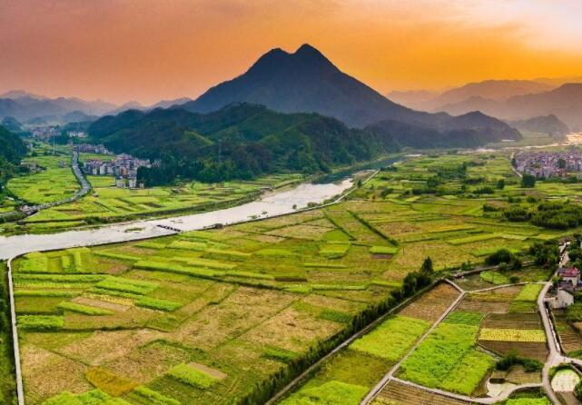

商务合作 QQ:340833389
抖音:28637558005  意见反馈
意见反馈
-
-
“助力三农、振兴乡村” 2021首届（BGVF）博鳌绿谷论坛成功举办
日前，由绿谷联社—海南绿谷数字科技农民专业合作社联合社主办的“2021首届(BGVF)博鳌绿谷论坛”在海南省博鳌亚洲论坛国际会议中心成功举办。大会现场参与人数2400多人，在线观众突破1200万人，由央视移动新闻、新华社现场云等平台，面向国内外多个导播中心进行直播，包括新加坡、匈牙利、西班牙、哈萨克斯坦、意大利、澳大利亚、日本、美国、韩国、泰国等。
2021年是“十四五”的开局之年，农村工作的重点从脱贫攻坚转向巩固脱贫攻坚成果与乡村振兴的有效衔接，基本实现“农村有产业有景看、农民有活干有钱赚”的发展目标。论坛围绕实现这个目标展开，一方面聚焦产业兴农，筑牢乡村振兴的经济底座；一方面聚焦改革创新，致力发展赋能，激活乡村振兴的内生动力。

首先，海南省琼海市副市长潘艳红为大会做了开幕词，她谈到：欢迎大家来到海南博鳌参加此次绿谷联社举办的首届绿谷论坛，希望绿谷联社支持我们农民的发展，农村的振兴，也欢迎各界产业投资、农业发展、农民居住选择海南、选择博鳌并预祝大会圆满成功。
农业农村部农业信息化标准化重点实验室主任、中国农业大学农业信息化研究中心主任高万林博士、中国合作经济学会会长孙中华、农业农村部科技发展研究中心研究员林友华分别以《智慧农业绿色技术创新发展》、《新农村创建之路》《创建宜居宜业乡村产业融合》为主题展开了主旨演讲。专家们就绿谷联社的各项工作给予了高度的肯定。高万林博士谈到：“绿谷联社能够团结一切可团结的力量，用科技助农、金融助农的方式，帮助大家一起抵御市场风险，这是一个很好的开端。”
绿谷联社积极响应国家政策号召，通过生产生活生态——三生共赢的绿谷三农系统建设以及文化引领、金融助农、科技支撑的扶持手段，打造种植业、养殖业、种源基地，多维度地拉动农村产业，实现农民富、农业兴、农村美的美好愿景。
在会议上，海南绿谷数字科技农民专业合作社联合社理事长刘昱杞代表主办方致辞，刘昱杞表示：“作为此次会议的东道主，对前来参会的各位领导、嘉宾表示热烈的欢迎和诚挚的感谢！”他谈到，今年绿谷联社将着力打造大农业产业链，建立国家级农业产业园。该项目由绿谷联社机构社员“中国三农控股”牵头，央企投资，推广统产联销的农村十统一产出和城市十联合销售，带动当地种植业、养殖业的出产率、销售率、利润率，为三农安全和乡村振兴建标杆。除此之外，在科技助农领域，绿谷联社将在土壤改良、养殖、种质培育、饲料改良等方面投入更多的科研力量，为农业产业的发展提供有力的技术支撑。
此次“博鳌绿谷论坛”的圆满成功是绿谷联社具有里程碑意义的大事，是绿谷联社协助各成员分社及各乡村建立农业生态、实现农业产业良性循环的开始。未来海南绿谷联社将与所有社员，共建共享绿碳农业的丰硕成果，共同助力乡村振兴。
-